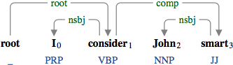

A complement (comp) is a either a clausal complement, a small clausal complement, or an open clausal complement.
Clausal complement
A clausal complement includes the surface subject.
The declarative clause "John is smart" modifying the predicate "consider".
The infinitive clause "me to study" modifying the predicate "wants".
The relative clause "what he studied" modifying the predicate "showed".
The imperative clause "may God be with you" modifying the predicate "said".
The copula becomes the head of the clausal complement (see copula for more details).
The clausal complement "that he studies hard" modifying the copula "is".
The clausal complement can modify a non-verbal predicate.
The clausal complement "that John studied" modifying the adjectival predicate "sure".
When used in topicalization, the clausal complement comes before the predicate.
The clausal complement "I studied" topicalized for the direct speech.
In a passive construction, the clausal complement comes before the predicate.
The clausal complement "what he studied" in the passive construction.
Small clausal complement
A small clausal complement includes the non-verbal predicate.
The small clausal complement "John the baptist", where the subject "John" is represented by the secondary dependency.
The small clausal complement "John the baptist" in the passive construction.
The small clausal complement "John the baptist" in the reduced passive construction.
The predicate of a small clause can be non-nominal.

The small clausal complement "John smart".
The small clausal complement "John smart" in the passive construction.
The small clausal complement "John smart" in the reduced passive construction.
Similarly to copula, when a preposition phrase is the object predicate, the preposition becomes the head of the phrase.
The small clausal complement "John after the baptist".
Open clausal complement
An open clausal complement does not include a surface subject. When the subject exists outside of the clause, it is represented by the secondary dependency.
The infinitive clause "to study" modifying the predicate "want".
The relative clause "what to study" modifying the predicate "want".
In a passive construction, the open clausal complement comes before the predicate.
An open clausal complement "to study" in the passive construction.